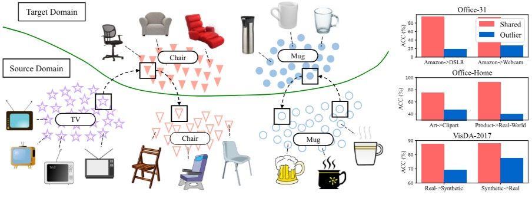

|
Jiaming Zhou I am a second-year PhD student at Hong Kong University of Science and Technology, Guangzhou, under the supervision of Prof. Junwei Liang. Prior to this, I obtained my Bachelor's degree in Computer Science and Engineering, from Sichuan University in 2020. Then I received my Master degree in Computer Science and Engineering, at Sun Yat-Sen University in 2023, where I was advised by Prof. Wei-Shi Zheng. I'm interested in computer vision and robotics. Currently, I mainly focus on human action understanding and robot learning. |
{kind=link}
| ❅ 03/2025: One paper was accepted to CVPR 2025. [Human-Robot Alignment] [量子位] |
| ❅ 09/2024: One paper was accepted to CoRL 2024. [Contrastive Imitation] |
| ❅ 07/2024: One paper was accepted to TPAMI. [HCTransformer] |
| ❅ 03/2024: Releasing the first cross-domain open-vocabulary action recognition benchmark! [XOV-Action] |
| ❅ 12/2023: AdaptFocus for long-video action understanding was released. [AdaptFocus] |
| ❅ 09/2023: One paper was accepted to NeurIPS 2023. [STDN] |
| ❅ 08/2023: One paper was accepted to TMM 2023. [TwinFormer] |
| ❅ 07/2022: One paper was accepted to ECCV 2022. [Cycle Inconsistency] |
| ❅ 03/2021: One paper was accepted to CVPR 2021. [GHRM] |
|
Exploring the Limits of Vision-Language-Action Manipulations in Cross-task Generalization
Jiaming Zhou, Ke Ye, Jiayi LIU, Teli Ma, Zifan Wang, Ronghe Qiu, Kun-Yu Lin, Zhilin Zhao, Junwei Liang to be summited to top conference Proposing a cross-task manipulation generalization benchmark to evaluate existing Vision-Language-Action (VLA) models and a novel generalizable VLA method. |
|

|
Mitigating the Human-Robot Domain Discrepancy in Visual Pre-training for Robotic Manipulation
Jiaming Zhou, Teli Ma, Kun-Yu Lin, Zifan Wang, Ronghe Qiu, Junwei Liang CVPR, 2025 [paper] [bibtex] [project page] [量子位] A new paradigm utilizing paired human-robot videos to adapt human-data pretrained foundation models to robotic manipulation domain. |
|
AdaFocus: Towards End-to-end Weakly Supervised Learning for Long-Video Action Understanding
Jiaming Zhou, Hanjun Li, Kun-Yu Lin, Junwei Liang arxiv, 2024 [paper] [bibtex] [project page] The first weakly supervised framework for developing efficient end-to-end action recognition models on long videos, which gives birth to a new weakly supervised pipeline for downstream long-video tasks. |
|

|
GLOVER: Generalizable Open-Vocabulary Affordance Reasoning
for Task-Oriented Grasping
Teli Ma, Zifan Wang, Jiaming Zhou, Mengmeng Wang, Junwei Liang arxiv, 2025 [paper] [project page] [bibtex] |

|
Contrastive Imitation Learning for Language-guided Multi-Task Robotic Manipulation
Teli Ma, Jiaming Zhou, Zifan Wang, Ronghe Qiu, Junwei Liang CoRL, 2024 [paper] [project page] [bibtex] |
|
ActionHub: A Large-scale Action Video Description Dataset for Zero-shot Action Recognition
Jiaming Zhou, Junwei Liang, Kun-Yu Lin, Jinrui Yang, Wei-Shi Zheng arxiv, 2024 [paper] [bibtex] A large-scale action video description dataset named ActionHub is proposed, which is the first, and the largest dataset that provides millions of video descriptions to describe thousands of human actions. |
|

|
TwinFormer: Fine-to-Coarse Temporal Modeling for Long-term Action Recognition
Jiaming Zhou, Kun-Yu Lin, Yu-Kun Qiu, Wei-Shi Zheng Transactions on Multimedia (TMM), 2023 [paper] [bibtex] |
|
Graph-based High-order Relation Modeling for Long-term Action Recognition
Jiaming Zhou, Kun-Yu Lin, Haoxin Li, Wei-Shi Zheng CVPR, 2021 [paper] [supp] [bibtex] |
|
|
Rethinking CLIP-based Video Learners in Cross-Domain Open-Vocabulary Action Recognition
Kun-Yu Lin, Henghui Ding, Jiaming Zhou, Yi-Xing Peng, Zhilin Zhao, Chen Change Loy, Wei-Shi Zheng arxiv, 2024 [paper] [bibtex] [github] The first benchmark, named XOV-Action, for the cross-domain open-vocabulary action recognition task, and a simple yet effective method to address the scene bias for the task. |
|
|
Human-Centric Transformer for Domain Adaptive Action Recognition
Kun-Yu Lin, Jiaming Zhou, Wei-Shi Zheng TPAMI, 2024 [paper] |
|
|
GeoDeformer: Geometric Deformable Transformer for Action Recognition
Jinhui Ye, Jiaming Zhou, Hui Xiong, Junwei Liang arxiv, 2023 [paper] [bibtex] |
|

|
Diversifying Spatial-Temporal Perception for Video Domain Generalization
Kun-Yu Lin, Jia-Run Du, Yipeng Gao, Jiaming Zhou, Wei-Shi Zheng NeurIPS, 2023 [paper] [supp] [bibtex] [github] |
|  |
Adversarial Partial Domain Adaptation by Cycle Inconsistency
Kun-Yu Lin, Jiaming Zhou (co-first), Yu-Kun Qiu, Wei-Shi Zheng ECCV, 2022 [paper] [supp] [bibtex] |
| Reviewers of CVPR 2022-Now, ECCV 2022-Now, ICCV 2023-Now. |
| Reviewers of NeurIPS 2024-Now, ICML 2024-Now, ICLR 2024-Now. |
| Reviewer of Transactions on Multimedia. |
| Reviewer of Pattern Recognition. |
|
This website borrows from Jon Barron. |